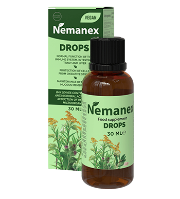

Des millions de personnes ne se doutent pas d'être infestées de parasites. Diagnostiquer la présence de «parasites» dans le corps n'est pas toujours facile, car de nombreux symptômes sont facilement confondus avec les signes d'autres maladies. Se débarrasser des organismes nuisibles est plus difficile qu'il n'y paraît – ils sont assez tenaces et se multiplient activement. Par exemple, les larves d'invasion helminthique peuvent rester chez l'homme, même après avoir nettoyé le corps des adultes. Et les symptômes (s'ils se manifestent) sont le plus souvent attribués à d'autres maladies. La parasitologue-Immunologue Diane Paulier a expliqué comment identifier rapidement et guérir l'infection par les parasites.

— Bonjour, docteur. Le problème de l'infection par les parasites est-il vraiment pertinent?
— Bonjour. Si nous regardons les statistiques, alors selon les données de 2010, il n'y avait pas plus de 3 milliards de personnes infectées dans le monde. En dix ans, le nombre de malades a augmenté à 5 milliards.
— Quelle horreur, tant de gens! Les parasites sont-ils si difficiles à déduire?
— Oui, beaucoup de gens ne savent pas qu'ils sont infectés. Et guérir est plus difficile qu'il n'y paraît. Certaines personnes pensent qu'elles vont boire une pilule et que tous les parasites vont mourir. Mais ils ne tiennent pas compte du fait qu'une fois il est impossible d'enlever tous les individus et leurs œufs.
— Comment ne pas sentir les vers à l'intérieur?
— Ce ne sont pas toujours des vers. Il existe également de tels micro-organismes qui ne sont pas détectés même au cours d'enquêtes élargies.
— Autrement dit, une personne peut être testée pour les parasites et penser qu'elle est en bonne santé, mais en fait infectée?
— Malheureusement, c'est le cas. Dans la nature, de nouvelles espèces apparaissent chaque jour. Le parasite s'adapte, change son ADN, sa forme, sa structure et reste invisible pendant longtemps. Il y avait des cas où les gens disaient que quelqu'un rampait à l'intérieur. Ils ont fait un examen complet, mais n'ont rien trouvé. Certains ont été redirigés vers un service psychiatrique. Après un temps où les parasites étaient trop tard pour être traités, il s'est avéré qu'ils étaient infectés par une espèce auparavant inconnue.
— Quelle horreur! Est-ce que tous les parasites affectent négativement le corps?
—Tous les parasites, sans exception, se nourrissent de vitamines et d'oligo-éléments de l'hôte, tout en endommageant ses tissus. Par exemple, l'ascaride dans l'intestin va presser, blesser la paroi intestinale. L'échinococcus, situé quelque part dans le foie, dans les poumons ou dans les reins, provoque la formation de kystes et même de tumeurs malignes.
— Ce qui peut être infecté?
— De différentes manières. La filariose est infectée après une piqûre d'insecte. Les œufs de vers ronds, ascaris, pénètrent dans le corps avec de la nourriture, de l'eau ou des animaux domestiques. Trichinella pénètre à l'intérieur en mangeant des aliments mal transformés.
— J'ai entendu dire que lorsqu'il est infecté par des parasites, il y a souvent une allergie qui ne peut pas être guérie.
— Avec réactions allergiques, le patient commence à marcher en cercle: chez le dermatologue, chez le thérapeute, chez l'allergologue. Mais il peut ne pas savoir que la cause de l'allergie est l'activité vitale des parasites.
— Est-il vrai que les organismes nuisibles endommagent le système immunitaire?
—Bien sûr, ainsi que la microflore et le système nerveux. D'où les rhumes fréquents et le développement de maladies chroniques. Les parasites produisent des anti-enzymes, inhibant le système immunitaire. Tôt ou tard, cela conduit à des maladies graves.
— Quels?
—Tout dépend de l'organe et de l'ampleur de la lésion. La chose la plus dangereuse qui peut causer des parasites en raison de dommages à un organe ou d'un dysfonctionnement du système immunitaire est un néoplasme. Bénigne et maligne.
— Plus j'en apprends sur les parasites, plus j'ai peur. Est-il vrai que les parasites peuvent causer un état dépressif?
— Les parasites peuvent même contrôler une personne. Les produits de leur activité vitale empoisonnent le système nerveux. Toute maladie psychosomatique peut être associée à une invasion parasitaire. Même la lamblia la plus simple produit des toxines. Les microdoses de toxines affectent le corps en tant que substances psychotropes. Troubles du sommeil, psychoses, obsessions, dépressions et autres problèmes psychologiques.
— Que prendre si j'ai découvert que j'étais infecté?
— Le problème de nombreux médicaments est qu'ils ne paralysent les organismes nuisibles, mais ne les éliminent pas. Soit affiche partiellement. Pour la récupération, vous avez besoin d'un nettoyage complet du corps.
— Existe-t-il un moyen d'éliminer complètement les parasites?
—Il est apparu récemment. Nettoyer et restaurer le corps aidera le médicament antiparasitaire naturel . En ce moment, c'est le seul remède qui non seulement lutte avec les espèces connues et nettoie le corps des produits de la vie, mais aussi cree une barrière protectrice qui empêche même les espèces inconnues de pénétrer dans le corps.

— Comment est-ce possible? Dites-nous plus!
— En pénétrant dans le corps humain, bloque le système nerveux des parasites, ce qui les empêche de bouger, de se multiplier et de se nourrir. Après cela, les organismes paralysés se détachent des parois des organes internes et sont excrétés naturellement. Le médicament élimine non seulement les parasites eux-mêmes, mais aussi les larves et les produits de l'activité vitale. La dernière étape est la restauration des tissus endommagés et l'immunomodulation. Par conséquent, il est si important de boire un cours complet du médicament.
Par ailleurs, il est recommandé d'utiliser les gouttes en même temps qu'un spray dans les cas compliqués. L'effet sera plus rapide et plus efficace.
— Y a-t-il des contre-indications et vous pouvez prendre cet outil pour la prévention?
— Chaque jour, nous sommes exposés à l'infection. 95% de la population est déjà infectée et la moitié d'entre eux ne le savent pas. Par conséquent, il est si important de vous protéger et de protéger vos proches. Et contrairement aux produits pharmaceutiques, peut être pris pour la prévention.
— Où puis-je acheter ce produit?
— peut être commandé directement auprès du fabricant avec livraison à domicile. Le produit peut être payé à l'avance et à la réception du courrier – très pratique.
— Merci beaucoup pour cette interview détaillée.
— Merci d'avoir choisi de mettre en lumière un problème aussi important de la modernité. Tout est bon pour vous et soyez en bonne santé.